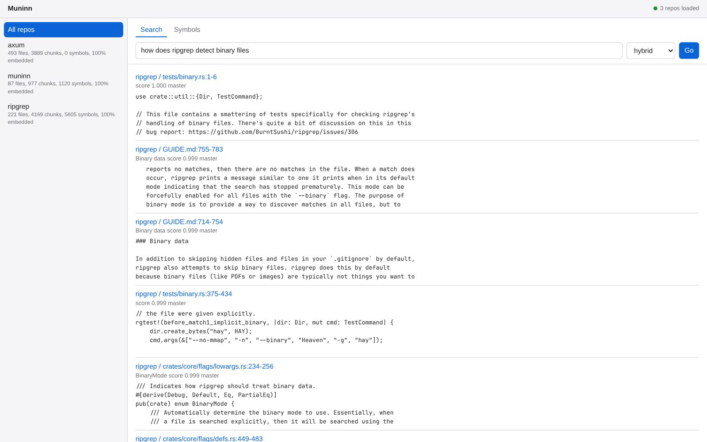

Recall puts the right memory first
A reranker orders the memories, so the fact that answers the prompt comes first.
Muninn indexes your git repos on every push and remembers what your agents learned. It runs on your own Linux server, for Claude Code, Codex and any MCP client.

Ask in plain words or paste an exact name. Muninn combines keyword and meaning search, reranks the best hits and follows symbols to their callers.
A reranker orders the memories, so the fact that answers the prompt comes first.
Before each prompt, the hook adds the memories that match it.
# ~/.claude/settings.json "UserPromptSubmit": [{ "hooks": [ { "type": "command", "command": "muninn hook prompt" } ] }] # added to the conversation muninn recall for this prompt: - [procedural] How to cut a release: bump the version, add a CHANGELOG section, run release.sh
Duplicates are merged, conflicts wait for review, and secrets are refused.
$ muninn remember "Deploys need the staging tag" \ --type procedural --source issue:API-212 active d19145cb $ muninn remember "api token=sk-live-4f9a..." rejected: text looks like a secret (credential assignment); store names only $ muninn review list 0 item(s) in review
Postgres row-level security limits every query to the projects of its token.
$ muninn doctor ok indexd: http://server:7410/healthz ok memoryd: http://server:7412/healthz ok index token: 3 repos indexed ok memory token: recall works
MIT licence. Use it, fork it, change it and ship it. Issues and pull requests are welcome.
See the source on GitHubStatic binaries for x86_64 Linux with systemd. You need Postgres 16 or later with pgvector. The README covers the database and tokens.
Systemd user services for the index, memory, MCP server and viewer.
$ curl -LO https://github.com/olibuijr/muninn/releases/latest/download/muninn-x86_64-linux.tar.gz $ tar xzf muninn-x86_64-linux.tar.gz && cd muninn-x86_64-linux $ mkdir -p ~/.config/muninn && cp index.env.example ~/.config/muninn/index.env $ ./install.sh
An embedding model and a reranker, then a mirror of each repo.
$ llama-server -hf ggml-org/embeddinggemma-300M-GGUF --embeddings --port 8084 $ llama-server -hf gpustack/bge-reranker-v2-m3-GGUF --reranking --port 8085 $ git clone --mirror https://github.com/you/api ~/.local/share/muninn/repos/api.git $ ~/.local/share/muninn/backfill.sh api
Adds the MCP server, hooks and agent skill to Claude Code and Codex.
$ MUNINN_HOST=http://server ./client.sh $ muninn doctor # viewer: http://server:7415
Agents search code and memory through nine MCP tools, or the CLI with --json. Muninn also ships a skill that teaches agents when to search, what to remember and how to fix a broken setup.
code_searchFind code by keywords or meaningsymbol_lookupWhere a name is defined and usedexplain_symbolA symbol with its callers and calleessearch_allCode, symbols and memory in one queryread_fileA file or a line range from any reporecallMemories that answer a questionrememberStore a decision, root cause or how-to$ muninn --json symbol search_path --repo ripgrep {"hits":[{"name":"search_path","kind":"method", "repo":"ripgrep","path":"crates/core/search.rs", "start_line":375,"end_line":385}, ...]} $ muninn --json recall "how do we cut a release" -k 1 {"hits":[{"type":"procedural","score":0.92, "text":"How to cut a release: bump the ...", "source":"session:2026-11-22-release"}]} $ muninn --json doctor {"ok":true,"checks":[...]}
Claude Code and Codex through the MCP server and hooks. Any agent that speaks MCP or can run a command can search and remember.
No. Indexing, embeddings and reranking run on your own machines. Muninn only reads the bare mirrors you give it.
Search works on any text. Chunks follow the syntax of Rust, TypeScript, JavaScript, Python, Go and more; callers and callees come from SCIP, built in for Rust and TypeScript.
The embedding model and reranker are about 1 GB together and run on a CPU. A GPU makes the first index of a large repo much faster.